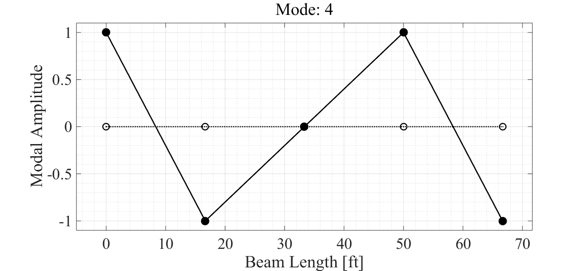

Contents
Vibs Example - 5DOF Lumped Mass Shear Beam
Beam Details and Analysis
jdv 06232015; 07232015; 08162015; 11122015
clear all
Beam Parameters
% section b = 1; % in h = 12; % in I = b*h^3/12; % in^4 A = b*h; % in^2 E = 29e6; % psi % geometry L = 100*12; % ft -> in; total length nn = 5; % number of inner dof (discretization) nel = nn+1; % number of beam elements mchk = 1; % 1 = lumped mass, else = continuous % mass ro = .29; % density [lb/in^3] grav = 386.4; % in/sec^2; mbar = A*ro; % lbf/in - weight mbar = mbar/grav; % lbm/in (m = f/a)
Build Beam
% build bernoulli beam [K,M] = beam_builder(E,I,L,nel,mbar,mchk); % make shear beam % -remove rotation dof ind = 2:2:length(K); K = removerows(K,'ind',ind); K = removerows(K','ind',ind); M = removerows(M,'ind',ind); M = removerows(M','ind',ind);
Eigen Solution
[V,D] = eig(K,M); % solve [val,ind] = sort(diag(D)); % sort eigenvalues V = V(:,ind); % apply sort to eigenvectors W = sqrt(val); % [rad/sec] F = W/2/pi; % [hz] % decouple system matrices Mr = V'*M*V; % modal mass, Mr Kr = V'*K*V; % modal stiffness, Kr % form mass normalized modeshapes Vn = zeros(size(V)); ne = size(V,2); % number of effective modes for ii = 1:ne Vn(:,ii) = V(:,ii)/sqrt(Mr(ii,ii)); end % get scaled modal mass and stiff Mr = Vn'*M*Vn; Kr = Vn'*K*Vn; % add proportional damping dampr = [.05 .05 .05 .05 .05]'; % damping ratio [% critical damping] dampf = -dampr.*W; % damping factor [rad/sec] Wn = sqrt(W.^2 + dampf.^2); % damped natural frequency [rad/sec] root = dampf + 1j.*Wn; % form positive poles
Form Residues
Get residue [A]r for each mode r from eigenvectors to form partial fraction expansion
% form radial frequency vector ns = 2^9; % number of spectral samples w = linspace(-150,150,ns); % [rad/sec] inLoc = 1:5; % index for input locations (columns of H) outLoc = 1:5; % index for output locations (rows of H) no = length(outLoc); % number of outputs ni = length(inLoc); % number of inputs ne = 5; % number of effective modes % define modal scaling for unit mass % notes: -true unity mass due to mass normalize eigenvector % -5 modes solved for Qr = 1./(2j.*diag(Mr).*Wn); % get FRF via residues AA = zeros(no,ni,ns); HH = zeros(no,ni,ns); for ii = 1:ne % loop modes % form [A] for mode ii -> [no x ni x ns] AA(:,:,ii) = Qr(ii) * V(:,ii) * V(:,ii)'; for jj = 1:no % loop outputs for kk = 1:ni % loop inputs out = outLoc(jj); % output DOF index in = inLoc(kk); % input DOF index for ll = 1:ns % loop spectral lines % form [H] - add mode ii contribution -> [no x ni x ns] % complex conjugate tt = AA(out,in,ii) ./ (1j*w(ll) - root(ii)) + ... conj(AA(out,in,ii))./(1j*w(ll) - conj(root(ii))); % add each mode for total response HH(jj,kk,ll) = HH(jj,kk,ll) + tt; end end end end % convert HH [no x ni x ns] -> H [ns x no*ni] (legacy format) H = zeros(ns,no*ni); hInd = 1:no*ni; hInd = reshape(hInd,no,ni); for ii = 1:ns for jj = 1:no for kk = 1:ni H(ii,hInd(jj,kk)) = HH(jj,kk,ii); end end end
Summary
System State Information:
fprintf('Mass: \n'); disp(M); fprintf('Stiffness: \n'); disp(K); fprintf('Natural Frequencies [Hz]: \n'); disp(F); fprintf('Damped natural frequencies [rad/sec]: \n'); disp(Wn); fprintf('Modal Mass: \n'); disp(Mr); fprintf('Modal Stiffness: \n'); disp(Kr); fprintf('Complex Roots:\n') fprintf('Pole %d\t Damping Factor: %6.3f\t Positive Pole: %6.3f\n',... [1:length(root); real(root)'; imag(root)'])
Mass:
1.8012 0 0 0 0
0 1.8012 0 0 0
0 0 1.8012 0 0
0 0 0 1.8012 0
0 0 0 0 1.8012
Stiffness:
12528 -6264 0 0 0
-6264 12528 -6264 0 0
0 -6264 12528 -6264 0
0 0 -6264 12528 -6264
0 0 0 -6264 12528
Natural Frequencies [Hz]:
4.8583
9.3856
13.2732
16.2563
18.1315
Damped natural frequencies [rad/sec]:
30.5639
59.0448
83.5020
102.2687
114.0659
Modal Mass:
1.0000 -0.0000 0.0000 0.0000 0.0000
-0.0000 1.0000 -0.0000 0 -0.0000
0.0000 -0.0000 1.0000 -0.0000 -0.0000
0.0000 0 -0.0000 1.0000 0.0000
0.0000 -0.0000 -0.0000 0.0000 1.0000
Modal Stiffness:
1.0e+04 *
0.0932 -0.0000 0.0000 0.0000 0.0000
-0.0000 0.3478 -0.0000 -0.0000 -0.0000
0.0000 -0.0000 0.6955 -0.0000 -0.0000
0.0000 -0.0000 0 1.0433 0.0000
0.0000 -0.0000 -0.0000 0.0000 1.2979
Complex Roots:
Pole 1 Damping Factor: -1.526 Positive Pole: 30.564
Pole 2 Damping Factor: -2.949 Positive Pole: 59.045
Pole 3 Damping Factor: -4.170 Positive Pole: 83.502
Pole 4 Damping Factor: -5.107 Positive Pole: 102.269
Pole 5 Damping Factor: -5.696 Positive Pole: 114.066
Beam Eigenvectors
% create figure fh = figure; ah = axes; fh.PaperPositionMode = 'auto'; fh.Position = [100 100 1300 600]; % loop to plot for ii = 1:5 fprintf('Mode: %d',ii); beam_plotshape(ah,V(:,ii),1,L,nn); title(['Mode: ' num2str(ii)],... 'fontweight','normal') snapnow end
Mode: 1
Mode: 2
Mode: 3
Mode: 4
Mode: 5
H11 - FRF
Input 1, Output 1 Driving Point
% index dof in = 1; % H column index out = 1; % H row index % form frf from residues and poles [Hs,hh] = vibsFRF(AA,root,in,out,w); % plot frf fprintf('H%d%d Magnitude\n',out,in); vibsFRFplot(Hs,hh,in,out,w); snapnow
H11 Magnitude

H11 - Phase
% plot phase fprintf('H%d%d Phase\n',out,in); vibsPhaseplot(Hs,hh,in,out,w); snapnow
H11 Phase
H11 - IRF
% plot irf fs = 200; % sampling freq l = .5; % length [sec] [hs,h] = vibsIRF(AA,root,in,out,fs,l); fprintf('H%d%d - Impulse Response Function\n',out,in); vibsIRFplot(hs,h,in,out,fs,l); snapnow
H11 - Impulse Response Function
H51 - FRF
Input 1, Output 5 Symmetric DOF
% index dof in = 1; % H column index out = 5; % H row index % form frf from residues and poles [Hs,hh] = vibsFRF(AA,root,in,out,w); % plot frf fprintf('H%d%d Magnitude\n',out,in); vibsFRFplot(Hs,hh,in,out,w); snapnow
H51 Magnitude
H51 - Phase
% plot phase fprintf('H%d%d Phase\n',out,in); vibsPhaseplot(Hs,hh,in,out,w); snapnow
H51 Phase
H51 - IRF
% plot irf fs = 200; % sampling freq l = .5; % length [sec] [hs,h] = vibsIRF(AA,root,in,out,fs,l); fprintf('H%d%d - Impulse Response Function\n',out,in); fh = vibsIRFplot(hs,h,in,out,fs,l); snapnow
H51 - Impulse Response Function